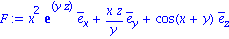
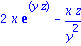
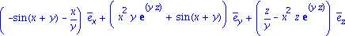
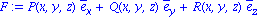
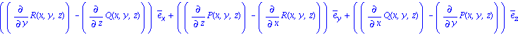

Divergence and curl
| > | restart; with(VectorCalculus): |
Warning, the assigned names <,> and <|> now have a global binding
Warning, these protected names have been redefined and unprotected: *, +, ., D, Vector, diff, int, limit, series
Divergence and curl are very simple. Remember to set coordinates when using vector fields, however.
| > | SetCoordinates( cartesian[x,y,z] ); |
| > | F:= VectorField( <x^2*exp(y*z), x*z/y, cos(x+y)> ); |

| > | Divergence( F ); |

| > | Curl( F ); |

Here is verification of a fundamental identity for any vector field F.
| > | F:= VectorField( <P(x,y,z), Q(x,y,z), R(x,y,z)> ); |

| > | Curl( F ); |

| > | Divergence( % ); |